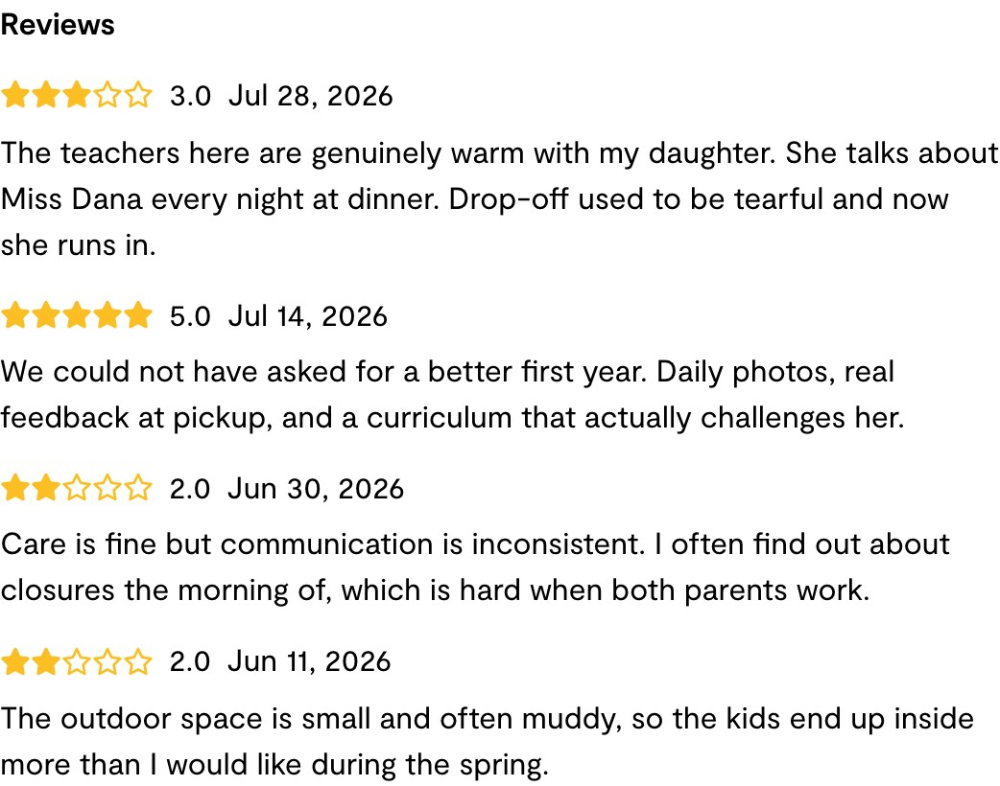
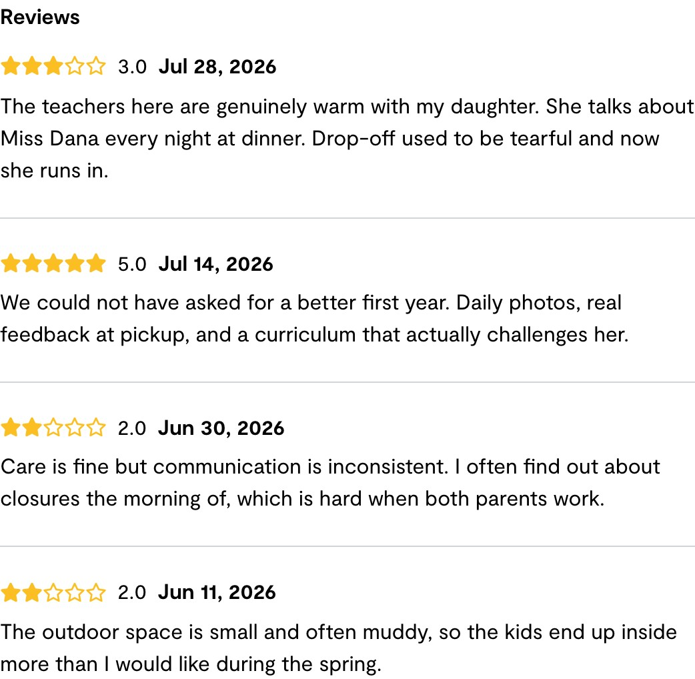
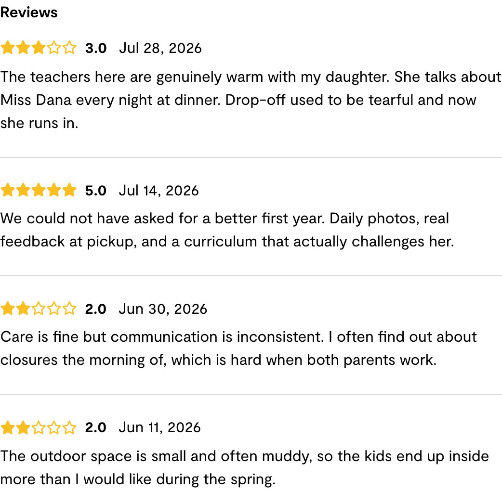

The problem it solves
Providers write to us through Canny asking for changes to the platform. The board has hundreds of open requests. Most are small, many are reasonable, and nobody has time to read them, let alone build them. The genuinely quick wins get buried under the big asks.
How the skill works
Reads the Product Requests board, top items by votes and by trending, plus the comments, since that is usually where the real complaint is.
Ranks them on demand, product fit, and how small the job is. Small and unambiguous wins.
Decides what it is allowed to touch. Only self-contained, reversible, clearly specified changes. Anything involving money, authentication, or deleting data is refused outright. Anything vague goes to a person with a written reason.
Builds exactly one item on its own branch and opens a pull request.
Posts to Slack what it built, what it refused, and what is queued next, and records it all in a ledger so the same request is never built twice.
"Difficult to distinguish between reviews"
The current review formatting on my Wonderschool profile makes it difficult to distinguish between reviews. Adding spacing between reviews and bolding the names and locations would improve readability.
A provider, filed to Canny in March. 2 votes, no comments.
The complaint held up under inspection. It was a real proximity defect, not a matter of taste. Proximity is how the eye groups things, and a boundary only reads if the space between groups clearly beats the space inside one.
A 2:1 ratio is too weak to group by, and once a comment wraps to three lines the paragraph's own leading absorbs the difference entirely. The boundaries stop meaning anything and eleven reviews fuse into one column of text.
Try to find where the second review starts without reading the words. The dates are the only clue and they do not stand out.

A hairline rule and 24px between reviews. Four reviews now read as four. The date was bolded as the anchor, and the rule used a raw Tailwind grey.

Bold moved to the rating, which is what a parent actually scans for and sits earlier in the line. Extra space after it, and the rule now uses a real design token.

What the human changed, and why
Bold the rating, not the date. Both give a review a starting point, so this was a judgement call rather than a bug. The rating is the thing a parent is scanning for and it sits earlier in the line, so it does more work as an anchor. The date returned to its original weight and gained a little breathing room, measured at 8px from stars to rating and 12px from rating to date.
Use the design token, not a raw grey. The separator moved to border-main, which resolves to the Wonderschool palette grey #D9D9D9 and is what the design system uses for its own dividers. Same visible result, correct provenance.
The mistake worth keeping
The colour error is the most instructive thing in this run, because it was not carelessness. Claude picked gray-300 because that is the lighter divider grey in our React design system. It is right there and wrong in LiveView, and nothing warns you:
#D9D9D9 on-palette#C1C1C1 on-palette
#d1d5db stock Tailwind#9ca3af stock Tailwind
One config replaces its colour set outright, the other extends it and covers only some shades, so the rest fall through to stock Tailwind. The same class name means two different colours depending on which half of the app you are in. Roughly 614 places in the LiveView code use border-gray-300 against 22 that use the semantic token, so this is a codebase-wide drift that a review-spacing fix was never going to solve. It is now a ticket.
What it refused, which is the point
Six of the seven newly evaluated requests were handed back, each with a specific mechanical reason rather than a vague risk note. Attendance entry on the dashboard, because that data is read-only and feeds state subsidy submissions. Default billing day, because it sets up automatic charges. Required inquiry fields, because that is a conversion tradeoff, not a code change.
Even inside the request it did build, it stopped halfway. The provider also asked to bold reviewer names and locations. Reviewers render anonymously today, so that is not a formatting change, it is newly exposing parent identity on a public page. It was routed to a person as a policy decision and bundled with a related request so one call settles both.
Worth noting the request itself is thin: two sentences, no comments, no screenshot. There are no names on that page to bold, and nothing that could supply a location. So the most likely reading is that the provider was describing the convention she knows from other review sites. The right next step is asking her, not building.
Honest limits
Claude is not especially good at visual design. It produces a solid first pass, and both changes a person made were judgement rather than repair. The value is that the pass exists at all, on a request nobody would otherwise have opened.
The seed data did not show the defect. The test reviews had no comment text, so the first screenshots looked tidy and proved nothing. Realistic review prose had to be seeded before the problem was visible at all, which is a reminder that a before-and-after can look like evidence without being any.
Where it stands. Three lines changed in one file, rendering on all six network listing pages. The LiveView test suite passes, 36 of 36, run locally. It is open as a draft pull request awaiting human review and merge. The skill has never merged anything and is not able to.